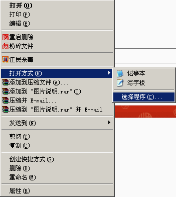
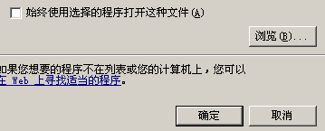

有无sgf转txt的软件
#1 有无sgf转txt的软件 作者：江南新绿 发表时间：2007-3-30 18:03:48
有无sgf转txt的软件#2 Re:有无sgf转txt的软件 作者：有志青年 发表时间：2007-3-30 19:34:12
sgf可以直接用记事本打开#3 Re:有无sgf转txt的软件 作者：江南新绿 发表时间：2007-4-2 16:39:13
是的，没有什么难度。不过还是想麻烦小丸或者有志能做一个批量转换的工具。
#4 Re:Re:有无sgf转txt的软件 作者：有志青年 发表时间：2007-4-2 16:50:14
引用：
原文由 江南新绿 发表于 2007-4-2 16:39:13 :是的，没有什么难度。不过还是想麻烦小丸或者有志能做一个批量转换的工具。

用鼠标右键点击sgf格式的文件，选择菜单“打开方式”，找“选择程序”，找到记事本，勾选永远，就ok了。


#5 Re:有无sgf转txt的软件 作者：江南新绿 发表时间：2007-4-2 16:56:56
以下是sgf文件用记事本打开后的状态，
--------------------------------------------------------------------------------------
(;
GM[5]FF[4]AP[ZJRenju]
US[保存自浙江五子教室服务器]
CP[
浙江五子教室版权所有。转载请保留本版权声明。]
PC[浙江五子教室]
SZ[15]
DT[2006年07月01日]
;B[ej];W[fh];B[gj];W[gh];B[ij];W[fg];B[hi];W[ii];B[hh];W[ih];B[jh];W[hg]
;B[if];W[hf];B[gf];W[ge];B[gg]
;)
--------------------------------------------------------------------------------------------------
X=Black O=White
A B C D E F G H I J K L M N O
15 . . . . . . . . . . . . . . . 15
14 . . . . . . . . . . . . . . . 14
13 . . . . . . . . . . . . . . . 13
12 . . . . . . . . . . . . . . . 12
11 . . . . . . . . . . . . . . . 11
10 . . . . . . . . . . . . . . . 10
9 . . . . . . . . . . . . . . . 9
8 . . . . . . . . . . . . . . . 8
7 . . . . . . . . . . . . . . . 7
6 . . . . . . . . . . . . . . . 6
5 . . . . . . . . . . . . . . . 5
4 . . . . . . . . . . . . . . . 4
3 . . . . . . . . . . . . . . . 3
2 . . . . . . . . . . . . . . . 2
1 . . . . . . . . . . . . . . . 1
A B C D E F G H I J K L M N O
----- Text Board -----
1 H8 2 H9
3 I7 4 J11
5 J12 6 F12
7 F7 8 I3
9 M3 10 L7
11 H5 12 D5
---------------------------------------------------------------------------------
以上是txt格式的棋谱。
-----------------------------------------------------------------------------------------
把sgf转换成txt的棋谱：
1。把查找sgf棋谱代码中是否有棋盘的中心点B[hh]，如果没有B[hh]或者有W[hh]，请输出txt文本记录下这个文件的名字。
2。如果sgf棋谱代码中的棋盘的中心点B[hh]不在首位，请做一个交换把棋盘的中心点B[hh]调至首位。
3。读取*.sgf棋谱代码转换成txt格式棋谱代码，如把B[hh]，转换成 1 H8
4。把txt格式棋谱中（此贴中的这个）的 ----- Text Board -----以上部分，原样拷贝，下面用转换过的棋谱代码代替。保存文件名为*.txt
希望能做个批量替换的。谢谢了。
#6 Re:有无sgf转txt的软件 作者：有志青年 发表时间：2007-4-2 20:25:48

方法如下：
1、用renlib软件打开sfg文件
2、文件菜单，导出棋库，文本棋盘。
试试看。
#7 Re:有无sgf转txt的软件 作者：江南新绿 发表时间：2007-4-2 21:42:47
谢谢有志，解决了。
#8 Re:有无sgf转txt的软件 作者：江南新绿 发表时间：2007-4-2 22:11:50
renlib读棋谱是没有问题，但是其他软件读棋谱还有问题，有些第一手不在中心点就不能读。：（
#9 Re:有无sgf转txt的软件 作者：gerbo 发表时间：2007-4-3 23:11:31
很好，我也遇到这问题了，江南发的真及时啊，禾禾．
#10 Re:有无sgf转txt的软件 作者：小丸.net 发表时间：2007-4-30 16:08:21
┏┯┯┯┯┯┯┯┯┯┯┯┯┯┓15┠┼┼┼┼┼┼┼┼┼┼┼┼┼┨14
┠┼┼┼┼┼┼┼┼┼┼┼┼┼┨13
┠┼┼＋┼┼┼┼┼┼┼＋┼┼┨12
┠┼┼┼┼┼┼┼┼┼┼┼┼┼┨11
┠┼┼┼┼┼┼┼┼┼┼┼┼┼┨10
┠┼┼┼┼┼┼○○┼┼┼┼┼┨9
┠┼┼┼┼┼○●●●┼┼┼┼┨8
┠┼┼┼┼●●●○┼┼┼┼┼┨7
┠┼┼┼┼┼○○┼┼┼┼┼┼┨6
┠┼┼┼┼┼┼┼┼┼┼┼┼┼┨5
┠┼┼＋┼┼┼┼┼┼┼＋┼┼┨4
┠┼┼┼┼┼┼┼┼┼┼┼┼┼┨3
┠┼┼┼┼┼┼┼┼┼┼┼┼┼┨2
┗┷┷┷┷┷┷┷┷┷┷┷┷┷┛1
A B C D E F G H I J K L M N O
五子妙手 棋谱－》保存特殊谱－》保存文字棋盘 请使用最新版的五子妙手。
#11 Re:有无sgf转txt的软件 作者：nkg114 发表时间：2008-6-10 18:54:39
sgf格式的文件头有没有什么标准，比如
GM[]FF[]AP[]US[]CP[]PC[]SZ[15]
DT[2006年07月01日]
为什么有的sgf文件就没有“GM[]FF[]AP[]”，上来就是“US[]”，后面还有“SW[]”？
是不是sgf格式的文件头自己想加什么项目就加什么都可以？比如我加个“FO[]”表示有没有禁手规则行不？
#12 Re:Re:有无sgf转txt的软件 作者：有志青年 发表时间：2008-6-10 20:26:56
引用：怎么说呢，也就是个约定吧，如果有软件支持，且使用范围广，那么就是标准了，例如你现在想新定义一个FO，那么就得找到五子棋谱软件开发人员，让他在读取你的棋谱的时候支持该字段。
原文由 nkg114 发表于 2008-6-10 18:54:39 :sgf格式的文件头有没有什么标准，比如
GM[]FF[]AP[]US[]CP[]PC[]SZ[15]
DT[2006年07月01日]
为什么有的sgf文件就没有“GM[]FF[]AP[]”，上来就是“US[]”，后面还有“SW[]”？是不是sgf格式的文件头自己想加什么项目就加什么都可以？比如我加个“FO[]”表示有没有禁手规则行不？
#13 Re:有无sgf转txt的软件 作者：nkg114 发表时间：2008-6-10 22:44:18
哦，这样啊。多谢有志先生指点～～！
看来sgf格式的棋谱不仅信息量充足而且有一定灵活性，确实值得推广。
我认为sgf格式的文件头以大写字母，分号，中括号标定信息的文本格式的棋谱有很高的兼容性。
我的想法是进一步推动五子棋sgf格式中数据类型的标准化，例如将SW[]（是否三手交换）标识下中括号里的信息定义为布尔类型，只有True和False两种信息；5A[]（貌似是表示五手两打第二个五手的位置）标识下中括号里的信息定义为双字符类型，比如hh；RE[]（表示棋局结果）标识下中括号里的信息定义为整型，1表示黑赢，2表示白赢，3表示抓禁，4表示弃权……等等，这样软件读取时为棋谱分类将更加智能化。
事实上，五子妙手III已经可以做到这样分类了，软件内部的数据库肯定也是类似于这样分类的，只是软件导出sgf格式谱时没有标准化这些信息点，而导入时则要手动设置，有点麻烦。不知丸子.net先生能否稍加改动（当然也可能这个功能已有，只因本人愚钝没有发现）。
此外由于每一个sgf谱都有一对()标定，那么多个棋谱（我这里的多个，有可能多达上十万个）放到一个文件里应该也可以了吧~~虽然大量棋谱用数据库系统管理更合理，但文件系统也确实有其不可比拟的灵活性和高兼容性咯。
PS：iwaq网的回复果然神速啊，网站的大牛们很敬业的说，赞一下 ～～
～～
#14 Re:有无sgf转txt的软件 作者：有志青年 发表时间：2008-6-11 6:53:58
sfg本身是纯文本格式的，且照这样的定义每个sfg文件只能保存一张棋谱哟（除非能设计出更为合理的多棋谱分支）